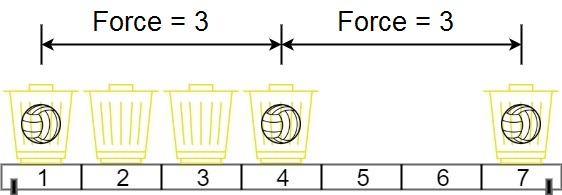

1552. 两球之间的磁力
二分最小间距 d：排序后贪心「能放就放」检查 d 是否放得下 m 球，收缩到最大可行 d。
思路
- 答案有单调性：间距
d放得满，比它小的都能 → 二分d。 - 上界
(最大−最小)/(m−1)：m 个球的间距总和至少要跨满整个范围。 - 贪心检查：第一球放最左篮子，往右遇到第一个
≥ last + d的位置就放球——「能放就放」不会让后面更难。 - 二分取上取整
mid = (lo+hi+1)/2：可行时lo = mid，不可行时hi = mid − 1，不会死循环。
图解
最优解
1import java.util.*;2 3class Solution {4 public int maxDistance(int[] position, int m) {5 Arrays.sort(position);6 // 二分「最小间距 d」：d 越大越难放满 m 个球，可行性随 d 单调递减7 int lo = 1, hi = (position[position.length - 1] - position[0]) / (m - 1);8 while (lo < hi) {9 int mid = (lo + hi + 1) >>> 1; // 上取整：走 lo = mid 分支才不会死循环10 if (fit(position, m, mid)) lo = mid;11 else hi = mid - 1;12 }13 return lo;14 }15 16 // 间距至少 d 能否放满 m 个：最左篮子放第一球，往右能放就放17 private boolean fit(int[] a, int m, int d) {18 int cnt = 1, last = a[0];19 for (int i = 1; i < a.length && cnt < m; i++) {20 if (a[i] - last >= d) {21 cnt++;22 last = a[i];23 }24 }25 return cnt >= m;26 }27}题目
在代号为 C-137 的地球上，Rick 发现如果他将两个球放在他新发明的篮子里，它们之间会形成特殊形式的磁力。Rick 有 n 个空的篮子，第 i 个篮子的位置在 position[i] ，Morty 想把 m 个球放到这些篮子里，使得任意两球间 最小磁力 最大。
已知两个球如果分别位于 x 和 y ，那么它们之间的磁力为 |x - y| 。
给你一个整数数组 position 和一个整数 m ，请你返回最大化的最小磁力。
示例 1：

输入：position = [1,2,3,4,7], m = 3 输出：3 解释：将 3 个球分别放入位于 1，4 和 7 的三个篮子，两球间的磁力分别为 [3, 3, 6]。最小磁力为 3 。我们没办法让最小磁力大于 3 。
示例 2：
输入：position = [5,4,3,2,1,1000000000], m = 2 输出：999999999 解释：我们使用位于 1 和 1000000000 的篮子时最小磁力最大。
提示：
n == position.length2 <= n <= 10^51 <= position[i] <= 10^9- 所有
position中的整数 互不相同 。 2 <= m <= position.length
题面取自力扣当前版本。
数据快照 2026-11-04。题面版权归力扣所有，本站点仅供本人学习使用，请勿对外发布。